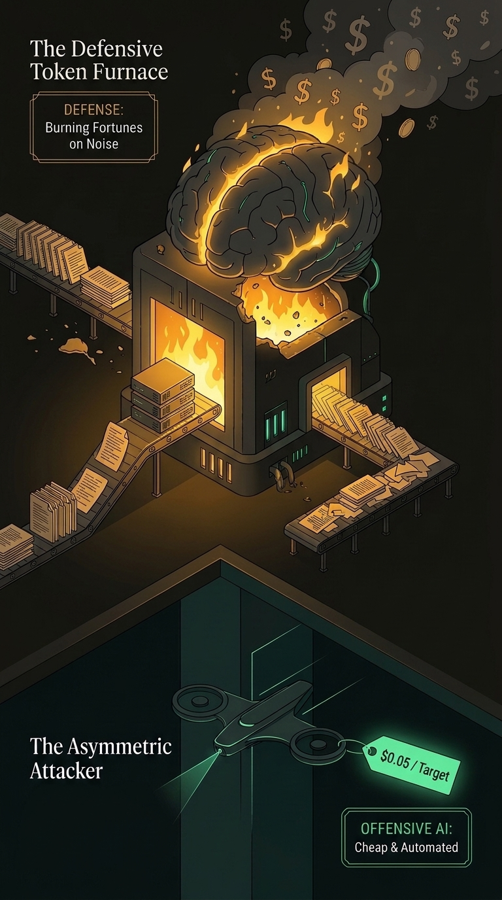

With offensive AI cheap and automated, tipping the advantage takes more than clichés like "Use AI to fight AI."
1. The Ingestion Trap
For twenty years, enterprise security ran on one bad habit: collect every mundane log, dump it into a data lake, and hope for visibility.
Deciding upfront which event carries true security value is hard engineering. The easy way out was simple: collect everything and charge by ingestion volume. That shortcut became a self-perpetuating business model. Vendors sell more cloud storage, and consultants sell endless rule packs.
Defenders harvest millions of routine process starts and network heartbeats. High-value signals vanish in the noise. Human analysts burn out closing false alarms.
Detection "Engineering" devolved into chasing offensive techniques. Teams write fragile signatures for endless CVEs, while attackers bypass them by tweaking a single execution flag.

2. Burning Tokens on Noise
The old playbook was simple: hire more human analysts to clear the noise.
Then came the AI wave. Organizations thought they could automate the grind by plugging Large Language Models into their legacy data lakes.
The reality is worse: feeding uncurated telemetry into an LLM does not create intelligence. It automates alert fatigue. Shoveling millions of noisy logs into LLM context windows burns tokens at such a massive scale that the AI bill ends up costing more than paying human salaries.
- Offensive AI is cheap: Attackers run autonomous scripts to probe perimeters and adapt payloads for pennies.
- Defensive brute force is ruinous: Buying more inference tokens to read bad telemetry will never outpace an automated adversary.
Unfortunately, there are no longer needles in the haystack because evading and disarming COTS sensors has become commonplace. Attackers blind off-the-shelf agents, abuse legitimate credentials, and blend completely into normal traffic. Defense requires shifting to High Security Value Telemetry with AI assist, rather than hoarding routine logs.
3. The Broken Network Foundation
Most enterprise networks remain flat and permissive. Workloads, user laptops, and internal servers share open routes, shielded only by perimeter assumptions.
In the Agentic Persistent Threat era, automated intrusions move laterally at the speed of inference. A compromised edge device or user workstation gives an agent an immediate runway.
Modern defense breaks down into two primary entry points:
-
Edge appliance and perimeter service exploitation
Firewalls, VPN gateways, and edge proxies are targeted first. Once breached, they provide an unobstructed entry into internal subnets.
-
Client endpoint compromise and initial access
Daily workstations and laptops fall to phishing lures, weaponized attachments, credential theft, or compromised software dependencies. Once an attacker lands on any internal endpoint, it becomes their immediate pivot point.
Fixing this broken foundation requires abandoning the illusion of perimeter firewalls and exposed VPN gateways. In our companion piece, Micro-Segmentation & Inevitable Paths, we break down how to systematically isolate services and endpoints, turning an attacker's mandatory reconnaissance into an inescapable tripwire.
The Inevitable Path (必经之路)
Instead of boiling the ocean with passive logs, defense begins by understanding the adversary's Inevitable Path: the non-negotiable actions an attacker must take to survive and advance.
Take a concrete example: choosing native telemetry like auditd and Eventlog is strategic for zero cost and universal compatibility. More importantly, upon gaining privilege escalation, an attacker will almost certainly try to disarm or silence them to avoid detection. That predictable step is their Inevitable Path. The moment an intruder reaches to blind the sensor, their evasion becomes the definitive tripwire that stops them cold.
4. Twenty Years on the Frontlines
I spent over 20 years in IT and defense operations:
- Saw to it that Singapore's Ministry of Home Affairs (MHA) first Cyber Security Center was fit for mission operations.
- Served as the technical driver delivering ST Engineering’s first enterprise-wide SOC end to end, from tender specifications and vendor selection to tech stack testing and initial operationalization.
- Transferred tacit operational knowledge to scale the team, then led Test & Evaluation (T&E) and applied research at our corporate joint lab with the Singapore University of Technology and Design (SUTD).
5. Eating My Own Pudding
An old dog like me kept up with the agentic AI wave by engineering what legacy tools refused to build: custom sensors for Linux, Windows, and macOS, alongside autonomous cyber deception and an agentic SOC built from scratch.
Today, I eat my own pudding. My home lab and edge nodes are defended around the clock by this exact agentic SOC. By pairing High Security Value Telemetry with AI assist, it delivers compliance support, protection, and detection all in one platform.
You do not need a twenty-person security team or a Fortune 500 budget to defend against automated AI agents. Small networks and lean teams can achieve enterprise-grade active defense on their own terms.
ACTIVE DEFENSE SERIES · TRACK 1
Part 1: Micro-Segmentation & Inevitable Paths
Leaving open ports to the internet invites global attacks. See how multi-zone micro-isolation cloaks services, protects endpoints without user friction, and floods the network with bespoke deception.
Read Part 1: The Terrain →